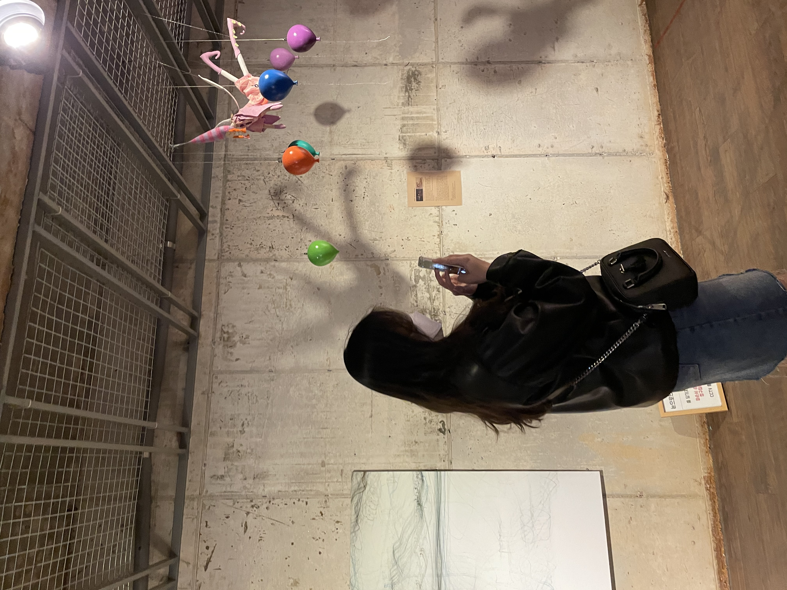
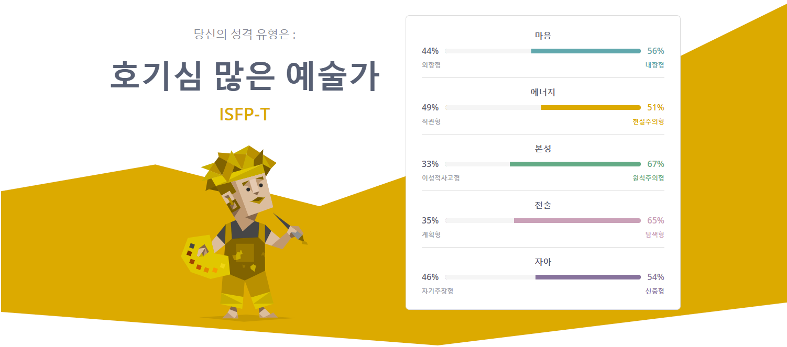
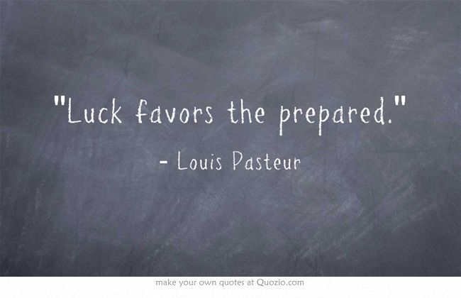

 이름은 박규민 , 생년월일은 2002.05.30 입니다.
 ◀ mbti 유형 검사하러 가려면 이미지 클릭!
저의 MBTI [마이어스-브릭스 유형 지표]는 ISFP 입니다 '▽'
고등학교 때까지는 ENFP였는데 졸업 후 환경이 변하면서 성격이랑 생각이 바뀐 것 같습니다.
저는 잘 웃고 긍정적인 편이며, 감수성이 풍부하답니다!!!

이건 제가 좋아하는 말입니다! 영화 인크레더블에서 나온 말인데, '행운은 준비된 자에게 온다' 라고 해석할 수 있습니다.
이 말을 좌우명으로 삼고 모든 일에 최선을 다하려고 노력하고 있습니다.
저의 대학생활이 궁금하시다면.. click ♡
제가 좋아하는 것들에 대한 내용은 메인 홈페이지의 [TV/영화/책]를 확인하세요!
▷ 메인 홈페이지로 돌아가기 ◁